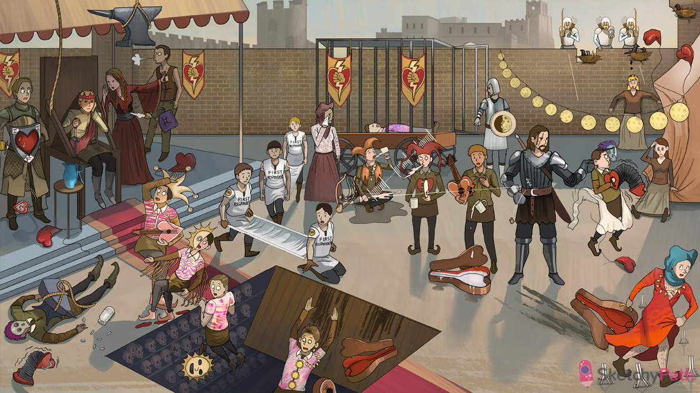

Jester under anvil: Symptoms of myocardial ischemia include intense chest pain or pressure that can radiate to the left arm or jaw, diaphoresis, anxiety, and dyspnea
Floppy heart on left of throne: With acute ischemia of the myocardium can be a decrease in cardiac output, flash pulmonary edema, or even cardiogenic shock
Servant breathing out: Flash pulmonary edema can often develop as a sequelae of acute myocardial infarction and tends to present as bibasilar rales
S4 Chair: Ischemic heart tissue will eventually stop contracting (loss of wall motion), making it stiff and noncompliant, creating the S4 heart tone
Lightning sigil to right of servant: One of the consequences of acute myocardial infarction is a drop in cardiac performance, sometimes leading to cardiogenic shock
Dead guy with anvil on top of him/accordion: Ventricular ischemia from infarction can lead to conduction abnormalities, predisposing patients to fatal ventricular arrhythmias; these can lead to sudden cardiac death
Heart shield with notes on it/falling watch to right of throne: Right coronary ischemia can affect not only the right ventricular myocardium, but the SA and AV nodes as well; this can lead to severe bradyarrhythmia or sick sinus syndrome
Guy to far left with knife behind back: Most people are right coronary dominant, meaning the right coronary artery makes up the posterior interventricular coronary artery, which supplies a significant portion of in interventricular septum and posterior left ventricle as well
Floppy heart balloon to right of throne: With infarction of the right ventricular myocardium, symptoms of right sided heart failure ensue
Jug of water on table: One of the signs of right sided heart failure is jugular venous distention from blood backing up into the superior vena cava
Lightning sigil behind jaime (upper left corner): If right sided ventricular ischemia is severe enough, it can lead to right sided heart failure and cardiogenic shock with normal left ventricular function
Jester with clock hat and heart lute: It takes a significant amount of time after an MI for the microscopic changes to reflect the clinical changes, so there will be normal appearing myocardium for the first 4 hours post-infarction
Jester with half-sun mask: About 4-12 hours post-infarction, there will be wavy, non-contractile myofibers seen on light microscopy
Blood under sun jester’s feet: Another early post-infarction finding is edema of cardiomyocytes and punctate microhemorrhages, heralding the oncoming coagulative necrosis
Jester holding onto edge of pit: At 12-24 hours post-infarction, dead myocardiocytes will display classic coagulative necrosis, have a pale appearance with with loss of nuclei, and form contraction band necrosis
EMTs with stretcher: As with most forms of inflammation and necrosis, neutrophils are the first inflammatory cells to be seen in the area of infarction, which typically occurs within 12-24 hours
Guy sliding into pit: Between days 1-3, coagulative necrosis continues, neutrophils accumulate, and dead myocardiocytes appear paler as they are broken down
Violin case sliding into pit: An early complication of infarction is early pericarditis, which presents within the first week with pleuritic chest pain, a pericardial friction rub, and resolution with a short course of aspirin
Cage in back: Between days 3-14, macrophages begin to infiltrate the area of ischemia as necrosis evolves
Granny with tissue to eye: When macrophages arrive to the area of necrosis (days 3-14), they release cytokines that activate fibroblasts to begin collagen production and early wound healing, resulting in granulation tissue development about a week post-infarction
Instrument with broken strings: Sometimes ischemia of the papillary muscle causes necrosis and rupture
Bicuspid Jester hat spilling what looks like ?milk all over himself: Papillary muscle rupture leads to rupture of the chordae tendinae on the mitral valve, leading to mitral regurgitation
Murmur lines: With mitral regurgitation, there will be a holosystolic blowing murmur that radiates to the left axilla
Jester sitting in puddle: With acute mitral regurgitation, the pulmonary venous system becomes congested, resulting in flash pulmonary edema and worsening dyspnea
Jester hat that looks like arteries: The posteromedial papillary muscle involved with postinfarction rupture and mitral regurgitation is supplied exclusively by branches of the posterior descending artery, which is right-sided in most people; therefore, right-sided MI can cause left ventricular papillary muscle rupture
Tamborine in jester’s hand: The LAD supplies the anterior ⅔ of the interventricular septum, and ischemia in this area can lead to septal rupture within the first week post-infarction
Jester spitting lightning bolt: With septal wall rupture, there is an immediate left to right shunt, which can also be heard as a holosystolic murmur
Lute with hole in left side: If enough of the left ventricle, which is supplied mainly by the LAD, becomes ischemia and necroses, cardiac filling pressures can cause rupture of the ventricular wall
Guitar case full of water: Ventricular free wall rupture leads to massive hemopericardium and tamponade. If it is not fatal, the clinical signs of tamponade are known as Beck’s triad: muffled heart tones, hypotension, and JVD
Sigils on jail cart: With any form post-infarction muscle rupture, there can be rapid clinical deterioration to cardiogenic shock or death
Guy in armor with scar on face: Fibroblasts, which are activated by macrophages, deposit collagen and fibrotic tissue between 3-14 days post-infarction, resulting in the formation of scar tissue that is even stronger than the surrounding myocardium
Accordion on far right: Though scar formation provides stability to the damaged myocardium, it causes conduction interruptions that can lead to deadly arrhythmia
Floppy heart balloon under jester: Myocardial scar tissue has no contractile ability, so surrounding myocardium undergoes eccentric hypertrophy to maintain cardiac output, which can lead to dilation and eventual heart failure
Cross-jester in bottom right corner with guitar case: Weeks to months after MI, autoimmune pericarditis, also known as Dressler’s Syndrome, can occur; this causes pleuritic chest pain, friction murmur, and is relieved with aspirin or NSAIDs
Spikes on the ground by fleeing jester: Dressler’s syndrome is an autoimmune pericarditis that results from the formation of IgG autoantibodies against myocardial antigens exposed during acute MI
Peasant fallen into tent: Another late onset complication of myocardial tissue being replaced by scar is ventricular wall aneurysm, which can lead to arrhythmia, and progressive heart failure
Peasant lady under bird nest against wall: A serious complication of ventricular aneurysm is blood stasis and mural thrombus formation, which can lead to to cerebrovascular accidents or coronary reinfarction